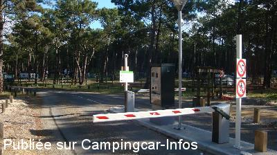
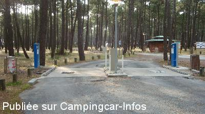
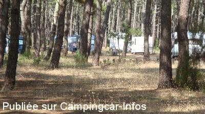
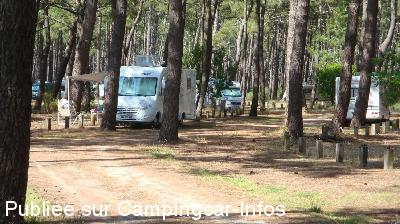

ASN = Aire de services avec stationnement nuit possible de :
BISCARROSSE Plage Le Vivier
(N° 159)
Accès/adresse :
Rue du Tit
Leopark
Parking du Vivier
40600 BISCARROSSE PLAGE
Leopark
Parking du Vivier
40600 BISCARROSSE PLAGE
Latitude : (Nord) 44.4585° Décimaux ou 44° 27′ 30′′
Longitude : (Ouest) -1.24515° Décimaux ou -1° 14′ 42′′
Tarif : 2015
Stationnement :
du 01/09 au 30/06
Jour 8 h à 20 h : gratuit
Nuit 20 h à 8 h, services : 8 €
Du 01/07 au 31/08
Jour 8 h à 20 h : gratuit
Nuit 20 h à 8 h, services : 15 €
Services C-C de passage : 4 €
Bornes automatiques paiement par carte bancaire ou pièces de monnaie
Type de borne : Artisanale
Services :


Supérette ouverte en haute saison
Chiens autorisés
Pour des mesures de sécurité, par décret préfectoral, les barbecues et feux ouverts, sont interdits
Navette bus en haute saison
Autres informations :
Ouvert toute l'année
200 emplacements surveillés, ombragés
Suspension du linge aux arbres Interdit
Tel : +33(0)558 046 452
commercial@leopark.fr
http://www.campingcarbiscarrosse.fr/spip.php

Le 05/07/2014 par Jean-François

Le 05/07/2014 par Jean-François

Le 05/07/2014 par Jean-François

Le 05/07/2014 par Jean-François
de
philippedu62
le 25/08/2015 :
de passage pendant les vacances juillet 2015
15 euros pour une nuit + eau ( un peu cher pour une nuit )
sinon aire tres agréable et plage a proximité
et un grand merci pour les agents de l'aire de camping car
de passage pendant les vacances juillet 2015
15 euros pour une nuit + eau ( un peu cher pour une nuit )
sinon aire tres agréable et plage a proximité
et un grand merci pour les agents de l'aire de camping car
de
ixeo23
le 06/07/2015 :
de passage le 20 juin 2015 . Aire propre agréable mais pas de télé satellite . Petite rando de 11 kms dans la pinède agréable.
de passage le 20 juin 2015 . Aire propre agréable mais pas de télé satellite . Petite rando de 11 kms dans la pinède agréable.
de
Jean Yves
le 20/09/2014 :
De passage le 19 septembre .
Entièrement d accord avec les commentaires précédents.
Pour être plus complet, la plage est 800 m et sur les 200 emplacements seul une dizaine peuvent capter la télévision par satellite.
De passage le 19 septembre .
Entièrement d accord avec les commentaires précédents.
Pour être plus complet, la plage est 800 m et sur les 200 emplacements seul une dizaine peuvent capter la télévision par satellite.
de
pbl
le 30/07/2014 :
Très bel environnement dans une pinède.
Assez proche de la plage et non loin d'un petit supermarché et d'un restaurant.
15€ la nuit en haute saison.
Gratuit de 8h à 20h si de passage.
Ceux qui vont prendre de l'eau au robinet près des toilettes n'ont rien compris.
Le ticket d'entrée (si vous séjournez) donne droit à 12 minutes d'eau (environ 100l) chaque 24h aux bornes.
Très bel environnement dans une pinède.
Assez proche de la plage et non loin d'un petit supermarché et d'un restaurant.
15€ la nuit en haute saison.
Gratuit de 8h à 20h si de passage.
Ceux qui vont prendre de l'eau au robinet près des toilettes n'ont rien compris.
Le ticket d'entrée (si vous séjournez) donne droit à 12 minutes d'eau (environ 100l) chaque 24h aux bornes.
de
Aires
le 21/01/2013 :
Aire de camping car vraiment très accueillante (encore faut-il être soit même agréable pour que le Policier Municipal, et non encaisseur comme j'ai pu le lire plus bas, vous le rende bien).
Certes, le prix de 12€ par rapport à l'année précédente peut paraître exagéré mais quand on voit le nombre de fois par jour ou les CC vont s'alimenter en eau (accès gratuit soit dit en passant), alors je trouve personnellement que ce prix est encore du domaine du raisonnable.
Je recommande donc fortement cette aire de stationnement.
Aire de camping car vraiment très accueillante (encore faut-il être soit même agréable pour que le Policier Municipal, et non encaisseur comme j'ai pu le lire plus bas, vous le rende bien).
Certes, le prix de 12€ par rapport à l'année précédente peut paraître exagéré mais quand on voit le nombre de fois par jour ou les CC vont s'alimenter en eau (accès gratuit soit dit en passant), alors je trouve personnellement que ce prix est encore du domaine du raisonnable.
Je recommande donc fortement cette aire de stationnement.